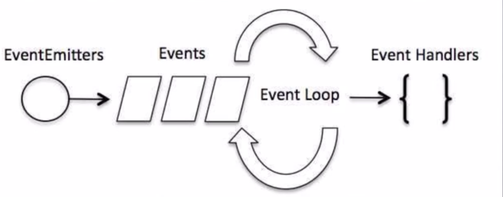

# NodeJS基础API
process.pid属性返回进程的 PID。process.cwd()方法返回 Node.js 进程的当前工作目录。- 项目热更新: 需要引入的包
nodemon __dirname总是指向被执行 js 文件的绝对路径.http是 node js 原生的 API.process.argv属性会返回一个数组，其中包含当 Node.js 进程被启动时传入的命令行参数。- 第一个元素是
process.execPath。 如果需要访问 argv[0] 的原始值。 - 第二个元素是
正被执行的 JavaScript 文件的路径。 - 其余的元素是任何
额外的命令行参数。
- 第一个元素是
process.execPath属性返回启动 Node.js 进程的可执行文件的绝对路径名
# Node.js回调机制
什么是回调:
函数调用方式分为3类:
同步调用、回调和异步调用。同步调用: 直接对某一个函数调用。回调: 是一种双向调用模式。被调用的一个函数, 在被调用时也会返过来调用它的主调函数, 这种情况就叫做回调。异步调用: 类似消息或者事件的一种机制。通过
回调函数来实现回调。
# 阻塞和非阻塞
- 阻塞和非阻塞: 关注的是
程序在运行当中等待调用的结果, 在等待的时候程序有一种状态, 这种状态就是阻塞或者是非阻塞状态。 - 阻塞(同步): 当调用一个函数的时候, 需要
等待这个函数返回一个值。 - 非阻塞(异步): 当调用一个函数的时候, 不需要等待这个函数的结果。而继续向下执行其他代码。
- 阻塞代码(同步读取文件):
const fs = require('fs');
cosnt data = fs.readFileSync('data.txt');
console.log(data.toString());
- 非阻塞代码(异步读取文件):
const fs = require('fs');
cosnt data = fs.readFile('data.txt', function(err, data){
if(err){
return console.err(err);
}
console.log(data.toString());
});
console.log('程序执行完毕');
# Node.js事件驱动机制
- 事件驱动模型(
非阻塞式 IO)  - nodeJS 运行机制:
单线程运行, 不能同时并发, 完成更多的事情。只能通过事件或者回调, 来实现并发效果。 - nodeJS 中的每一个 API 全部都是异步执行, 都是作为独立的线程在运行。 使用异步函数调用, 可以实现并发处理。几乎所有的事件机制都是依据
观察者模式来实现的。
# 事件处理代码流程
- 引入
event对象, 创建eventEmmitter对象。 - 绑定事件处理程序。
- 触发事件。
- 代码:
// 引入 Event 模块, 并创建 eventEmitter 对象。
const events = require('events');
const eventEmmitter = new events.EventEmmitter();
// 绑定事件处理函数
const connctHandler = function connected(){
console.log('connected被调用!');
}
// 第一个参数事件处理名称，第二个参数事件处理函数句柄
eventEmmitter.on('connection', connctHandler()); // 完成事件绑定
// 触发事件
eventEmmitter.emit('connection');
console.log('程序执行完毕');
// 执行结果为:
// connected被调用!
// 程序执行完毕
// 一定要先绑定，才能进行事件触发。
# NodeJS 模块化
为了让 Node.js 的
文件可以相互调用。 Node.js 提供了一个简单的模块系统。模块是 Node.js 应用程序的基本组成部分。
文件和模块是一一对应的。
一个 Node.js 文件就是一个模块。这个文件可能是 JavaScript 代码、JSON 或者编译过的C/C++扩展。
Node.js 中 存在四类模块(原生模块和3种文件模块);
- 原生模块: nodeJS 天然提供
- 3种文件模块: 一般为第3方提供
# NodeJS 的模块化加载流程

- 从文件模块缓存中加载
- 从原生模块加载
- 从文件加载
# require方法加载模块
- require 方法接受以下几种参数的传递:
http、fs、path等,原生模块。直接添加模块的名字./mod或../mod, 相对路径的文件模块。/pathtomodule/mod, 绝对路径的文件模块。- mod 非原生模块的文件模块。
- 模块导出:
// 模块的主要逻辑 function Hello(){ let name; this.setName = function(argName) { name = argName; } this.sayHello = function() { console.log('Hello '+ name); } } // 模块进行导出 module.export = Hello;- 引入模块:
// 调用 Hello 模块 const Hello = require('./hello'); hello = new Hello(); hello.setName('jingjing'); hello.sayHello();
# NodeJS 函数
- 函数概念
- 在 JavaScript 中,
一个函数可以作为另一个函数的参数。(一般回调的时候会用到) - 可以先定义一个函数, 然后传递, 也可以在传递参数的地方直接定义函数。
- 举例:
// 把一个函数作为一个变量，传递给另外一个函数 function say(word){ console.log(word); } function execute(someFunction, value){ someFunction(value); } execute(say, 'Hello'); - 在 JavaScript 中,
- 匿名函数
- 可以把一个函数作为变量传递。
- 不一定"先定义, 在传递", 可以直接在另一个函数的括号中定义和传递这个函数。
- 举例:
function execute(someFunction, value){ someFunction(value); } execute(function(word){ console.log(word) }, 'Hello'); - HTTP 服务端的函数传递
- 匿名函数
var http = require("http"); http.createServer(function(request,response){ response.writeHead(200,{"Content-Type": "text/plain"}); response.writeHead("Hello word"); response.end(); }).listen(8888) - 先定义后传递
var http = require("http"); function onRequest(request,response){ response.writeHead(200,{"Content-Type": "text/plain"}); response.writeHead("Hello word"); response.end(); } http.createServer(onRequest).listen(8888)
- 匿名函数
# NodeJS 路由 (详细看菜鸟教程)
- 基础
// controlle/action。controlle => start. 一个 controller 对应多个 action. url.parse(string).query | url.parse(string).pathname | | | | | ------ ------------------- http://localhost:8888/start?foo=bar&hello=world --- ----- | | | | querystring.parse(queryString)["foo"] | | querystring.parse(queryString)["hello"] - http.js 文件代码:
var http = require("http"); var url = require("url"); function start(route) { // 获取浏览器请求的 URL 地址 function onRequest(request, response) { var pathname = url.parse(request.url).pathname; route(pathname, response); } http.createServer(onRequest).listen(8888); console.log("Server has started."); // 服务运行后输出一行信息 } exports.start = start; - router.js
function route(pathname, response){ if(pathname === '/'){ // 定义 http 头，设置响应头。 text/plain 表示html response.writeHead(200, { "Content-Type": "text/plain" }); // 发送响应数据 response.write("Hello World"); response.end(); } else if(pathname === '/index/home') response.end("index"); } else { response.end("找不到我了？404"); } } export.route = route; - app.js
var server = require('./http'); var router = require('./router'); server.start(router.route);
# NodeJS 全局方法和工具 (详细看菜鸟教程)
Node.js中的全局对象是global，所有全局变量（除了 global 本身以外）都是 global 对象的属性。在
Node.js我们可以直接访问到global 的属性，而不需要在应用中包含它。全局对象与全局变量:
global 最根本的作用是作为全局变量的宿主。按照 ECMAScript 的定义，满足以下条 件的变量是全局变量:- 在最外层定义的变量;
- 全局对象的属性;
- 隐式定义的变量(不给变量加 var, 未定义直接赋值的变量);
当你定义一个全局变量时，这个变量同时也会成为全局对象的属性，反之亦然。- 需要注意的是，在 Node.js 中你不可能在最外层定义变量，因为
所有用户代码都是属于当前模块的， 而模块本身不是最外层上下文。也就是说没有一个window窗口。 - 注意： 最好不要使用 var 定义变量以避免引入全局变量，因为全局变量会污染命名空间，提高代码的耦合风险。
__filename: 表示当前正在执行的脚本的文件名。它将输出文件所在位置的绝对路径，且和命令行参数所指定的文件名不一定相同。如果在模块中，返回的值是模块文件的路径。创建文件 main.js ，代码如下所示：
console.log( __filename ); // 输出全局变量 __filename 的值
输出:
/web/com/runoob/nodejs/main.js
__dirname: 表示当前执行脚本所在的目录。console.log( __dirname ); // 输出全局变量 __dirname 的值
输出:
/web/com/runoob/nodejs
setTimeout(cb,ms)setTimeout(cb,ms)全局函数在指定的毫秒(ms)数后, 执行指定函数(cb)。- 只执行一次指定函数。
- 案例:
function printHello(){ console.log("hello word"); } var t = setTimeout(printHello, 200)
clearTimeout(t)- 全局函数用于停止一个之前通过
setTimeout()创建的定时器，参数 t 是通过setTimeout()函数创建的计算器。 - 案例:
function printHello(){ console.log("hello word"); } // 两秒后执行函数 var t = setTimeout(printHello, 200); // 清除定时器 clearTimeout(t)
- 全局函数用于停止一个之前通过
setInterval(cb,ms)setInterval(cb, ms)全局函数在指定的毫秒(ms)数后执行指定函数(cb)。- 返回一个代表定时器的句柄值。
- 可以使用
clearInterval(t)函数来清除定时器。 setInterval()方法会不停地调用函数，直到clearInterval()被调用或窗口被关闭。
consoleconsole.log([data][, ...]): 向标准输出流打印字符并以换行符结束。console.info([data][, ...]): 该命令的作用是返回信息性消息console.error([data][, ...]): 输出错误消息的console.warn([data][, ...]): 输出警告消息console.dir(obj[, options]): 用来对一个对象进行检查（inspect），并以易于阅读和打印的格式显示。console.time(label): 输出时间，表示计时开始。console.timeEnd(label): 结束时间，表示计时结束。console.trace(message[, ...]): 当前执行的代码在堆栈中的调用路径console.assert(value[, message][, ...]): 用于判断某个表达式或变量是否为真，接收两个参数，第一个参数是表达式，第二个参数是字符串。
process: 用于描述当前 Node.js进程状态的对象，提供了一个与操作系统的简单接口。process是一个全局变量，即 global 对象的属性。进程: 应用程序(node 特殊的软件) 和 系统交互的接口。
exit: 当进程准备退出时触发。beforeExit: 当 node 清空事件循环，并且没有其他安排时, 则触发这个事件。通常来说，当没有进程安排时 node 退出，但是 'beforeExit' 的监听器可以异步调用，这样 node 就会继续执行。uncaughtException: 当一个异常冒泡回到事件循环，触发这个事件。如果给异常添加了监视器，默认的操作（打印堆栈跟踪信息并退出）就不会发生。- node 处理错误，最高级别的一个手段. 找不到相应的错误，但是还想捕获, 不想程序哪里写错了，就让程序挂掉, 捕获错误高的方法。
Signal 事件: 当进程接收到信号时就触发。信号列表详见标准的 POSIX 信号名，如 SIGINT、SIGUSR1 等。示例:
process.on('exit', function(code) { // 以下代码永远不会执行 setTimeout(function() { console.log("该代码不会执行"); }, 0); console.log('退出码为:', code); }); console.log("程序执行结束"); // 结果 // 程序执行结束 // 退出码为:0
NodeJS 常用工具:
util是一个Node.js核心模块，提供常用函数的集合。const util = require('util');util.inheritsutil.inherits(constructor, superConstructor)- 是一个实现对象间
原型继承的函数。
util.inspectutil.inspect(object,[showHidden],[depth],[colors])- 是一个将任意对象转换 为字符串的方法，通常用于调试和错误输出。
- 它至少接受一个参数 object，即要转换的对象。
util.isArrayutil.isArray(object)- 给定的参数 "object" 是一个数组返回 true，否则返回 false。
util.isRegExputil.isRegExp(object)- 给定的参数 "object" 是一个正则表达式返回true，否则返回false。
util.isDateutil.isDate(object)- 给定的参数 "object" 是一个日期返回true，否则返回false。
- 工具库:
underscore
# NodeJS 文件系统
const fs = require("fs");Node.js文件系统（fs 模块）模块中的方法均有异步和同步版本- 读取文件内容的函数有异步的
fs.readFile()和同步的fs.readFileSync()。 - 异步的方法函数, 最后一个参数为回调函数，回调函数的第一个参数包含了错误信息(error)。
- 建议使用
异步方法，比起同步，异步方法性能更高，速度更快，而且没有阻塞。
- 读取文件内容的函数有异步的
读取文件的两种方式:
const fs = require("fs"); // 异步读取 fs.readFile('input.txt', function (err, data) { if (err) { return console.error(err); } console.log("异步读取: " + data.toString()); }); // 同步读取 var data = fs.readFileSync('input.txt'); console.log("同步读取: " + data.toString()); console.log("程序执行完毕。");打开文件:
fs.open(path, flags[, mode], callback)path- 文件的路径。flags- 文件打开的行为。具体值详见下文。Flag 描述 r 以读取模式打开文件。如果文件不存在抛出异常。 r+ 以读写模式打开文件。如果文件不存在抛出异常。 rs 以同步的方式读取文件。 rs+ 以同步的方式读取和写入文件。 wx 类似 'w'，但是如果文件路径存在，则文件写入失败。 w+ 垂直制表符 wx+ 类似 'w+'， 但是如果文件路径存在，则文件读写失败。 a 以追加模式打开文件，如果文件不存在则创建。 ax 类似 'a'， 但是如果文件路径存在，则文件追加失败。 a+ 以读取追加模式打开文件，如果文件不存在则创建。 ax+ 类似 'a+'， 但是如果文件路径存在，则文件读取追加失败。 mode- 设置文件模式(权限)，文件创建默认权限为 0666(可读，可写)。callback- 回调函数，带有两个参数如：callback(err, fd)。案例
var fs = require("fs"); // 异步打开文件 console.log("准备打开文件！"); fs.open('input.txt', 'r+', function(err, fd) { if (err) { return console.error(err); } console.log("文件打开成功！"); });
获取文件信息:
fs.stat(path, callback)path- 文件路径。callback- 回调函数，带有两个参数如：(err, stats), stats 是 fs.Stats 对象。fs.stat(path)执行后，会将stats类的实例返回给其回调函数。可以通过
stats类中的提供方法判断文件的相关属性。例如判断是否为文件：案例
var fs = require('fs'); fs.stat('/Users/liuht/code/itbilu/demo/fs.js', function (err, stats) { console.log(stats.isFile()); //true })- stats类中的方法有：
方法 描述 stats.isFile() 如果是文件返回 true，否则返回 false。 stats.isDirectory() 如果是目录返回 true，否则返回 false。 stats.isBlockDevice() 如果是块设备返回 true，否则返回 false。 stats.isCharacterDevice() 如果是字符设备返回 true，否则返回 false。 stats.isSymbolicLink() 如果是软链接返回 true，否则返回 false。 stats.isFIFO() 如果是FIFO，返回true，否则返回 false。FIFO是UNIX中的一种特殊类型的命令管道。 stats.isSocket() 如果是 Socket 返回 true，否则返回 false。
写入文件:
fs.writeFile(file, data[, options], callback)- 异步模式下
写入文件 writeFile直接打开文件默认是w 模式，所以如果文件存在，该方法写入的内容会覆盖旧的文件内容。file- 文件名或文件描述符。data- 要写入文件的数据，可以是 String(字符串) 或 Buffer(缓冲) 对象。options- 该参数是一个对象，包含 {encoding, mode, flag}。默认编码为 utf8, 模式为 0666 ， flag 为 'w'callback- 回调函数，回调函数只包含错误信息参数(err)，在写入失败时返回。- 案例
var fs = require("fs"); console.log("准备写入文件"); fs.writeFile('input.txt', '我是通 过fs.writeFile 写入文件的内容', function(err) { if (err) { return console.error(err); } console.log("数据写入成功！"); console.log("--------我是分割线-------------") console.log("读取写入的数据！"); fs.readFile('input.txt', function (err, data) { if (err) { return console.error(err); } console.log("异步读取文件数据: " + data.toString()); }); });
- 异步模式下
读取文件:
fs.read(fd, buffer, offset, length, position, callback)- 异步模式下
读取文件 fd- 通过fs.open()方法返回的文件描述符。buffer- 数据写入的缓冲区。offset- 缓冲区写入的写入偏移量。length- 要从文件中读取的字节数。position- 文件读取的起始位置，如果 position 的值为 null，则会从当前文件指针的位置读取。callback- 回调函数，有三个参数err, bytesRead, buffer，err 为错误信息， bytesRead 表示读取的字节数，buffer 为缓冲区对象。- 案例
var fs = require("fs"); var buf = new Buffer.alloc(1024); console.log("准备打开已存在的文件！"); fs.open('input.txt', 'r+', function(err, fd) { if (err) { return console.error(err); } console.log("文件打开成功！"); console.log("准备读取文件："); fs.read(fd, buf, 0, buf.length, 0, function(err, bytes){ if (err){ console.log(err); } console.log(bytes + " 字节被读取"); // 仅输出读取的字节 if(bytes > 0){ console.log(buf.slice(0, bytes).toString()); } }); });
- 异步模式下